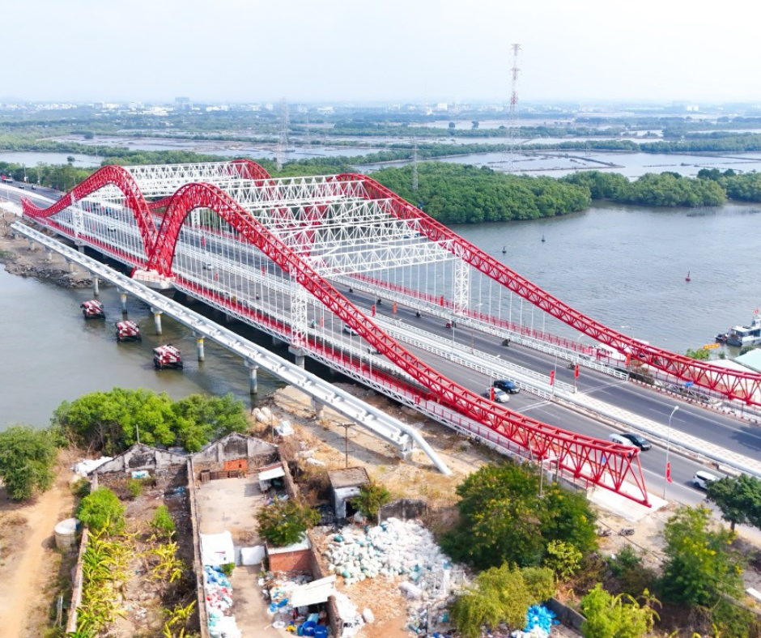

Cây cầu cửa ngõ phía Bắc thành phố Vũng Tàu
Cầu Cỏ May là cây cầu quan trọng thuộc tỉnh Bà Rịa – Vũng Tàu, nằm trên tuyến Quốc lộ 51, đóng vai trò là cửa ngõ phía Bắc dẫn vào trung tâm TP. Vũng Tàu. Cầu góp phần kết nối giao thông giữa TP.HCM – Đồng Nai – Bà Rịa và thành phố biển Vũng Tàu.
| Tên chính thức | Cầu Cỏ May |
|---|---|
| Tên nhân gian | Cầu Cỏ May Vũng Tàu |
| Vị trí | Phường 12, TP. Vũng Tàu – Tỉnh Bà Rịa – Vũng Tàu |
| Bắc qua | Sông Cỏ May |
| Năm khởi công | Khoảng năm 1898 |
| Năm hoàn thành | Khoảng năm 2000 |
| Chiều dài | ~ 258 m |
| Chiều rộng | 30 m |
| Tải trọng thiết kế | HL-93 |
| Loại kiến trúc | Cầu bê tông cốt thép |
| Đơn vị thiết kế | Bộ Giao thông Vận tải |
| Đơn vị thi công | Tổng công ty xây dựng công trình giao thông |
| Tổng mức đầu tư | Khoảng 400 – 500 tỷ đồng (ước tính theo dự án nâng cấp QL51) |
Cầu Cỏ May giữ vai trò cửa ngõ giao thông quan trọng, giúp kết nối trung tâm Vũng Tàu với Quốc lộ 51 và các tỉnh Đông Nam Bộ. Công trình tạo điều kiện thuận lợi cho phát triển du lịch biển, vận chuyển hàng hóa và phát triển kinh tế khu vực.
Sau khi hoàn thành, cầu Cỏ May giúp giảm tình trạng ùn tắc tại cửa ngõ thành phố, đặc biệt trong các dịp lễ và mùa du lịch cao điểm.

Cầu Cỏ May – cửa ngõ vào thành phố Vũng Tàu
Video thực tế cảnh giao thông qua cầu Cỏ May
Nếu video không hiển thị, xem trực tiếp tại: YouTube – Cầu Cỏ May
| Tên cầu | Chiều dài | Năm hoàn thành | Loại cầu |
|---|---|---|---|
| Cầu Cỏ May | 500 m | 2000 | Bê tông cốt thép |
| Cầu Cửa Lấp | 1.200 m | 2006 | Bê tông cốt thép |
| Cầu Phú Cường | 446 m | 2009 | Dây văng |